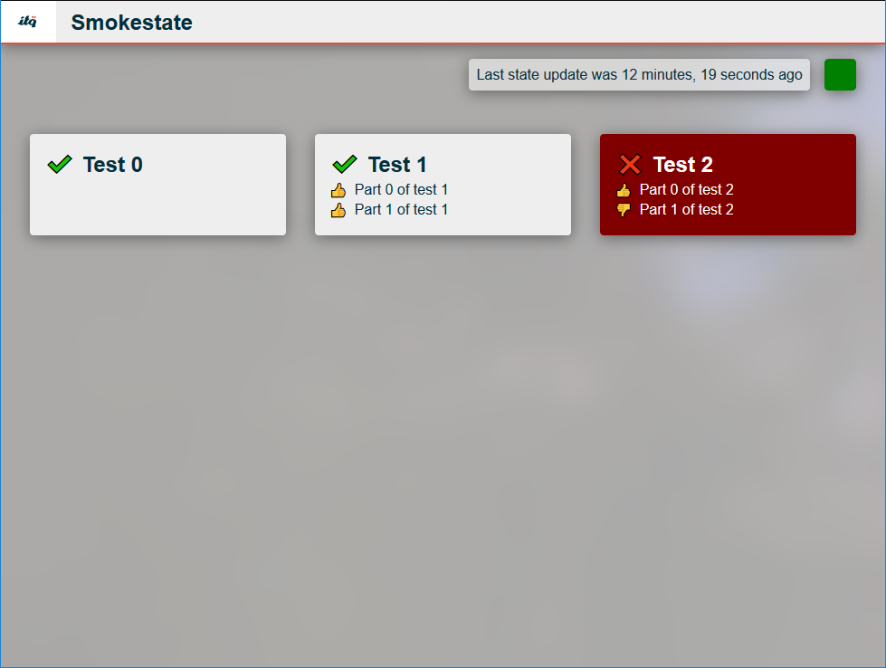

This dashboard gives you the ability to monnitor apps and services on your Cloud Foundry platform. Test clients can send their results to the dashboard webserver where they will be pushed to the front-end.
This project also includes a pipeline configuration that you can use to keep an eye on your platform. The dashboard will notify you when it is not receiving data from the back-end anymore, warning you of potential deployment failures elsewhere.
Source for the dashboard and canary is available in this repo.
Use this little utility to run tests agains http endpoints. See the project readme file for more information.
This project contains tests made for specific backing services. Use this to monitor the state of services inside the platform.
Source for the tests can be found in this repo.
Have a any feedback or comments? You can create an issue right here on github or reach out to @ITQ on Twitter.